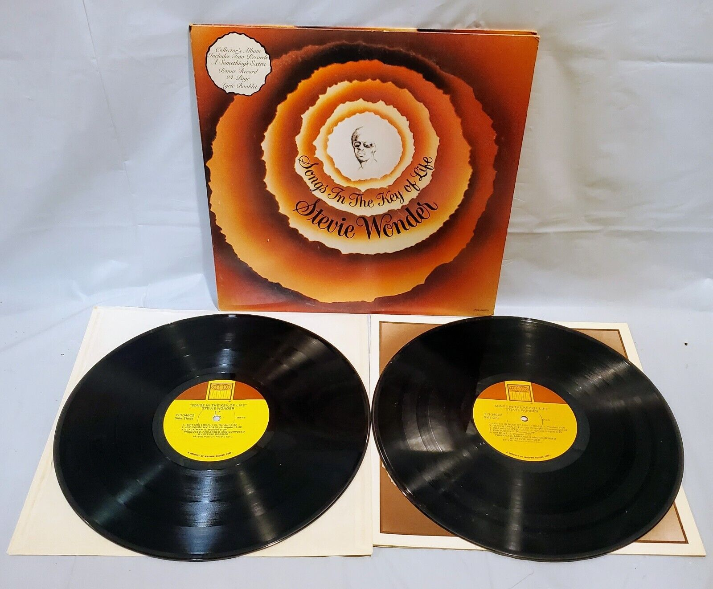
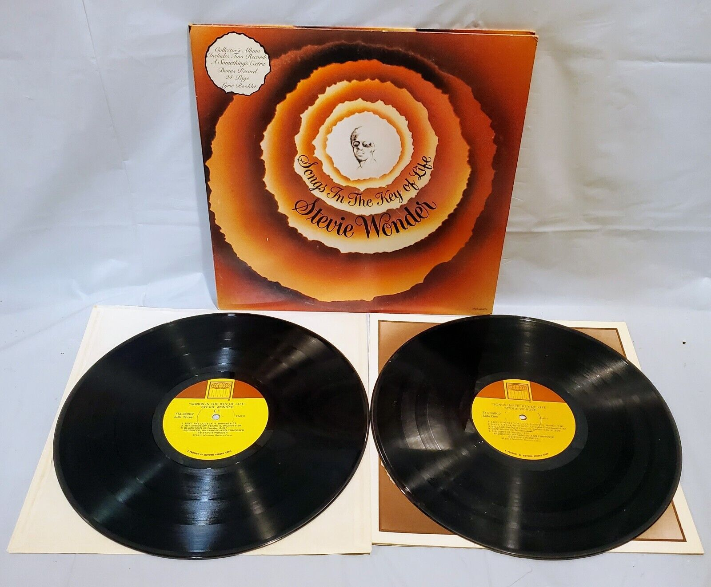

"Songs in the Key of Life" by Stevie Wonder
ad code: A12345
price: 29.99€Short Description:
A musical masterpiece by Stevie Wonder, "Songs in the Key of Life" is a genre-defying album that blends soul, funk, and R&B.
Detailed Description:
"Songs in the Key of Life" is not just an album; it's a musical journey that has left an indelible mark on the world of music. Released by the legendary Stevie Wonder, this iconic work transcends genres, seamlessly blending soul, funk, and R&B into a harmonious symphony of sound. It's no wonder that Rolling Stone magazine has ranked "Songs in the Key of Life" as the #1 album of all time.
Technical Specifications:
| Specification | Details |
|---|---|
| Language | English |
| Original Release Date | 1976 |
| Label | Motown Records |
| Number of Tracks | 21 |
| Weight | 235,87g |
Advertisement Details:
Posted Date: 23-10-2023
Last Modified: 25-10-2023
Views: 800
Price Change: No Change
See more vinyls